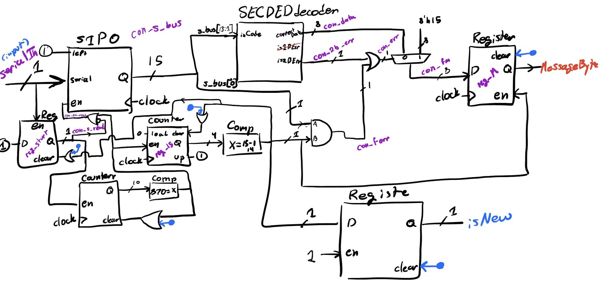
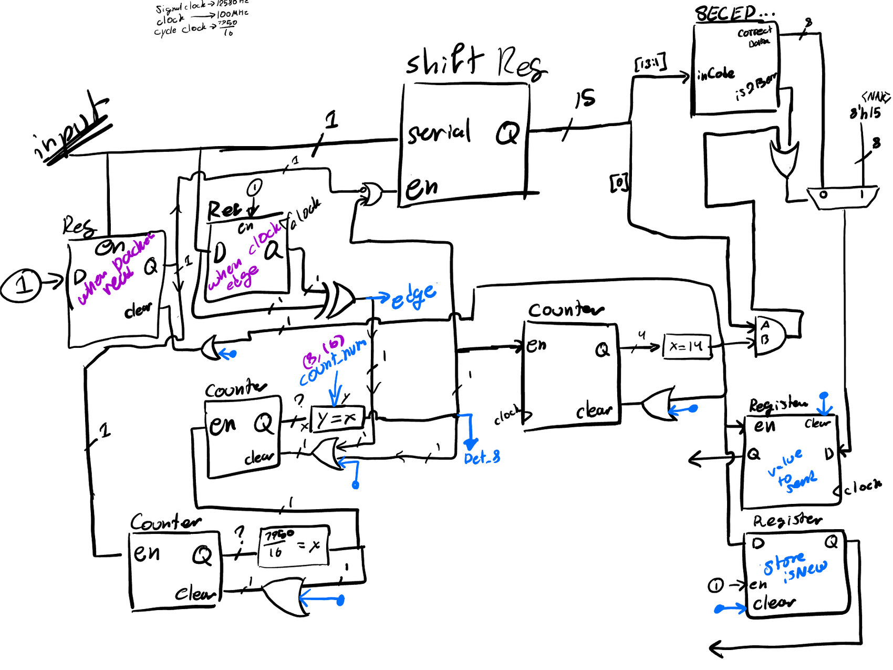
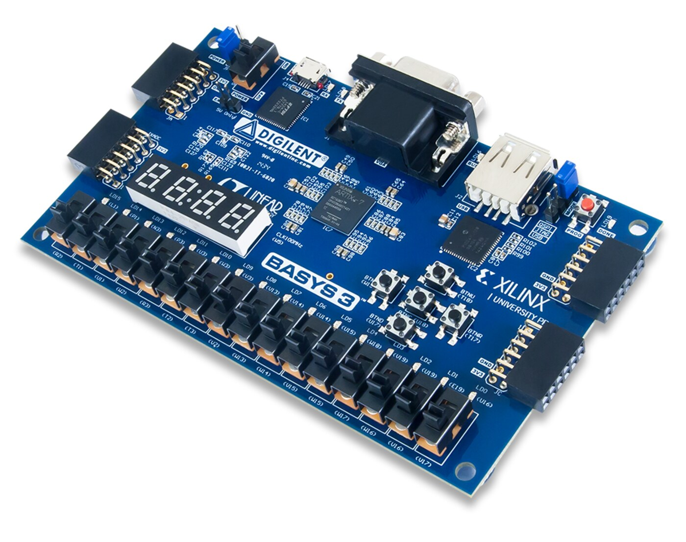

For my digital systems course at CMU (18-240), I built the receiving end of a Bluetooth serial link on an FPGA, in structural SystemVerilog, wired up from a library of primitives. The course gave us a black-box Bluetooth device that would send out a signal, our job was to receive it and display it on the monitor. It samples the incoming bits on a tight clock-cycle count, runs them through a Hamming error-correcting decoder that can fix a single-bit error and catch a double, then resends the cleaned-up data as a standard UART frame, all sequenced by a small state machine.
I did the design and most of the programming and debugging, and our team was the second in the class to finish. The best part was getting comfortable in the waveform viewer, learning to read a circuit's behavior signal by signal, which is still one of my favorite ways to debug hardware.


